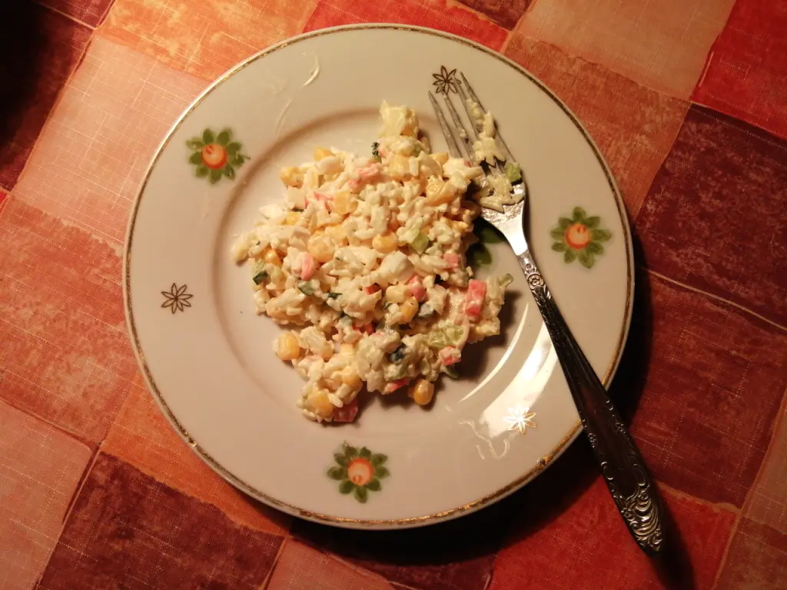

Crab salad

- ⏲️ Prep time: 10 min
- 🍳 Cook time: 30 min
- 🍽️ Servings: 3
Ingredients
- Сrab meat (300 grams)
- Egg (3)
- Rice (50 grams)
- Corn (1 can)
- Cucumber (1)
- Carrot (1)
- Onion (1)
- Mayonnaise (100 grams)
Directions
- Boil rice, eggs and carrot
- Chop crab meat and all other ingredients
- Combine and mix all ingredients
- Add mayonnaise
- Chill before serving
Contribution
Anonymous